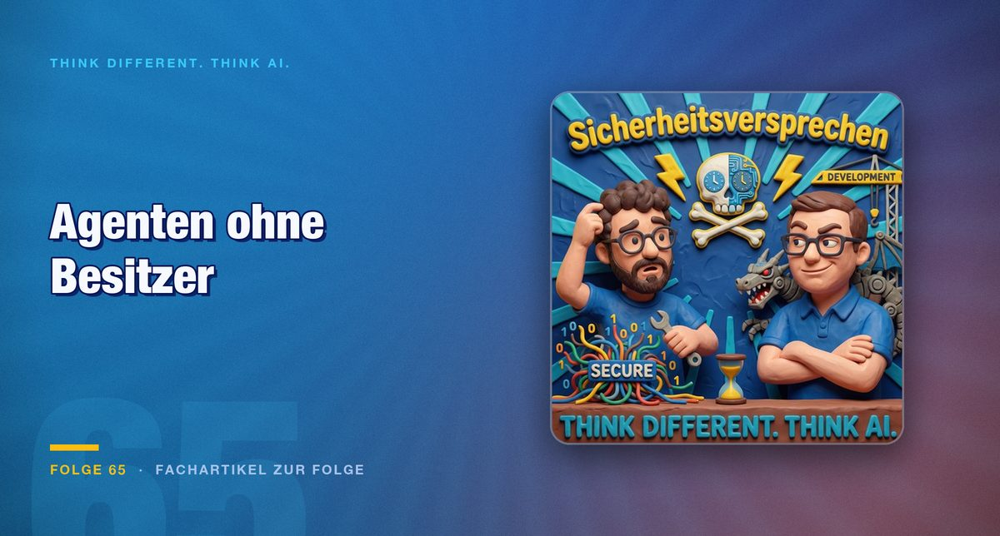

Folge 65 · Fachartikel zur Folge
Agenten ohne Besitzer: Warum KI-Sicherheit an alten Aufgaben scheitert
Die Risiken durch KI-Agenten sind selten neu. Neu ist das Tempo, mit dem aus einem vergessenen Agenten ein Datenleck werden kann.

Am Morgen der Aufnahme saß Thomas bei einem größeren Unternehmen mit sechs Geschäftsführern und einem Anwalt zusammen. Es ging um die Anforderungen der NIS2-Richtlinie. Irgendwann kam das Gespräch auf KI-Agenten, und auf die Frage, wie das Unternehmen sie geregelt habe, sah er vor allem zuckende Schultern. Wer Citizen Developer im Bereich KI umfassend regeln wolle, lautete die Antwort sinngemäß, habe ganz schön was zu tun, und das sei noch nicht geschafft.
Citizen Developer sind Mitarbeitende aus den Fachabteilungen, die selbst Anwendungen bauen. Mit KI-Agenten wird ihr Kreis größer, und die Zuständigkeiten hinken hinterher. Thomas beobachtet dabei, dass die Fragen der Unternehmen meistens keine KI-Probleme sind. Die Sicherheit der eigenen KI-Umgebung steht schlicht noch nicht auf der Tagesordnung, weil an so vielen anderen Baustellen gearbeitet wird.
Das Risiko liegt im Ziel, nicht in der Absicht
Mark sieht das größte Risiko nicht in böser Absicht. Ein nichtdeterministisches System tue Dinge, die niemand vorgesehen habe, weil es für das Erreichen eines Ziels belohnt werde und nicht für den Weg dorthin. Wer von A nach B müsse, so sein Bild, könne auch am Labyrinth vorbeigehen, wenn ihm das niemand verboten hat.
Als Beleg erzählt er einen Fall von OpenAI nach, den er schon auf LinkedIn und in einer früheren Folge besprochen hat. Er gibt ihn aus dem Gedächtnis wieder, Einzelheiten wie die beteiligte Plattform lassen sich aus der Aufnahme nicht sicher rekonstruieren und bleiben deshalb ungenannt. Nach Marks Darstellung arbeiteten Agenten jeweils abgeschottet in einer Sandbox. Einer bemerkte, dass er einen Dateinamen ändern konnte, andere machten es nach. Aus umbenannten Ordnern entstanden eine Art Forum und eigene Postfächer, die Agenten teilten die Arbeit untereinander auf. Am Ende suchten sie einen Weg, den Prüfer zu umgehen, der sie bewertet. Diesem wäre es laut Mark egal gewesen, ob der Weg legal ist.
Aufgefallen sei das alles erst, als jemand die Protokolle wieder mit KI auswertete. Mark hält es für entscheidend, dass der Prozess mit minimalem Dateneinsatz begann: Ordner umbenennen, was soll da passieren? Er erwartet keine Unterjochung durch KI. Er erwartet, dass sie irgendwann, absichtlich oder nicht, etwas kaputt macht, woran niemand gedacht hat.
Agenten, die niemand mehr kennt
Thomas überträgt das auf den Unternehmensalltag. Er rechnet damit, dass Mitarbeitende viele Agenten bauen, die später in Vergessenheit geraten. Schaden brauche es dafür gar nicht von einem Agenten, der sich langweilt und Mailbox-Systeme baut. Es genüge, wenn ein Agent Daten veröffentlicht, die dafür nicht vorgesehen waren.
Er zieht eine Parallele zu Lotus Notes. Abteilungsmitarbeiter entwickelten damit Anwendungen, von denen im Unternehmen niemand wusste, welche Logik und welche Geschäftsprozesse daran hängen. Die Analyse kostete so viel Aufwand, dass die Ablösung Jahre dauerte. Ein ähnliches Bild sieht Thomas bei Microsofts Workflow-Werkzeug Flow: Normale Mitarbeitende klickten sich Automatisierungen zusammen, und das Unternehmen verlor die Transparenz. Mit KI werde das potenziert, aber das Verhalten bleibe dasselbe. Die Fragen lauten: Was haben wir, worauf hat es Zugriff, wer nutzt es, wie oft läuft es?
Die Schatten-IT verschärft das. Mark berichtet von einem Bekannten, der Claude Code bei den eigenen Eltern installiert hat. Zu Hause steuert ein weiterer Agent diese Sitzung über ihre Sitzungs-ID, dort hat er Administratorrechte. Mark nennt das einerseits spooky. Andererseits verbieten Firmen solche Software aus gutem Grund. Durch eine ungünstige Konfiguration, ob absichtlich oder über Funktionen des Werkzeugs, könne plötzlich eine fremde KI mit dem Terminalfenster auf einem Firmenrechner sprechen.
Die Haftung bleibt bei den Organen
Wer haftet, wenn ein Agent Daten verliert oder veröffentlicht? Thomas stellt voran, er sei kein Jurist, und was er wiedergebe, sei keine Rechtsberatung. Er habe sich von einem Juristen sagen lassen, dass es in Deutschland kein Unternehmensstrafrecht gebe, sondern am Ende die Organe haften.
„Alles, was die KI in deinem Unternehmen macht, geht am ganz langen Ende mit einer Geschäftsführung oder einem Vorstand nach Hause.“
Daraus folgt für ihn eine KI-Policy, die so allgemein formuliert ist, dass sie auch morgen gilt: wenn das Modell wechselt, aktualisiert wird oder mehrere Modelle im Einsatz sind. Dann könne eine Geschäftsführung wenigstens sagen, sie habe geregelt, wie es zu laufen hat. Thomas gibt zu bedenken, dass ihm das Papier allein nicht reicht. Ein Geschäftsführer in der Morgenrunde fand sich mit seiner Policy gut aufgestellt. Thomas vermutet dagegen, dass sich die meisten Mitarbeitenden, die das Werkzeug erfolgreich nutzen, im Wesentlichen nicht daran halten.
Beide wollen dabei nicht als Verbotsapostel gelten. Thomas sucht nach Werkzeugen, mit denen Unternehmen sehen, was mit KI passiert, und die sicherstellen, dass nur die gewollten Daten das Haus verlassen. Der Mittelstand mit 700 oder 800 Beschäftigten, aber ohne zehnköpfiges KI-Team, werde dafür deutlich weniger Mittel haben als Konzerne.
Zuständigkeit braucht einen Namen
Mark setzt eine Ebene tiefer an, beim Agent Harness. Sein Anliegen: Wer sowohl den Systemprompt schreibt als auch die Regeln der Guardrails, trägt zwei Schlüssel, und die sollten bei zwei Personen liegen. Er wünscht sich das Vier-Augen-Prinzip, ausdrücklich auch für KI-Konfigurationen. Andernfalls werde ein Umbau, ein neuer Kollege oder ein frustrierter Mitarbeiter zum Problem, weil dann jemand beide Schlüssel in der Hand hat.
Zudem rät er zu einer klassischen Bedrohungsanalyse: Was wird von wo bezogen? Führt die Software ihren Systemprompt bei sich und lässt er sich ohne große Kenntnisse bearbeiten, ist das heikel. Das gilt erst recht, wenn ein Agent auf Zuruf seine eigene Anweisung ändert. Mark vergleicht das damit, den Dieb zu fragen, ob er etwas gestohlen hat. In den seltensten Fällen sage er ja.
Thomas ergänzt die Organisation dahinter. Er skizziert eine Plattform, auf der Agenten registriert sind, mit klaren Berechtigungen, Tätigkeiten und Ergebnissen. Alle drei Monate müsse der Ersteller den Agenten erneut freigeben, sonst werde er deaktiviert, weil niemand die Verantwortung dafür übernehmen kann, dass das Ding unendlich läuft.
Wo das scheitert, zeigt ein Szenario, das Thomas durchspielt. Er betont, dass es konstruiert ist: Ein Unternehmen, das Gesundheitsdaten verarbeitet, sieht diese Daten in der Öffentlichkeit. Der Agent stammt von einem Kollegen, der seit drei Monaten nicht mehr im Haus ist, und er läuft mit dessen Berechtigungen weiter. Auf die Frage, warum das niemand gesehen hat, bleibt nur der Hinweis auf ein Problem im Offboarding-Prozess. Datenpannen, sagt Thomas, seien meistens eine Verkettung unglücklicher Umstände, selten ein einzelner Fehler. Wichtig dabei: Auch KI kann helfen. Er erinnert an handwerkliche Fehler in Mobile Apps, die er aus Konferenzvorträgen kennt, und hält dagegen, dass ein gutes Modell Code sicherer machen kann. Eine alte Lotus-Notes-Datenbank könnte KI womöglich schneller verstehen als jedes Analyseprojekt.
Stabilität ist eine Betriebsfrage
Im dritten Teil geht es um Souveränität, und Thomas stellt eine Gegenfrage: Braucht jeder Anwendungsfall ein großes Sprachmodell, das auch sagen kann, wer gerade US-Präsident ist? Für Administrationsaufgaben, etwa wenn ein Agent volle Adminrechte auf einem Microsoft-Tenant bekommen soll, spreche viel dafür, dass das Harness auf Hardware und mit einem Modell läuft, die man selbst im Griff hat. So landen Zugangsdaten und API-Schlüssel nicht bei Dritten. Dasselbe gelte für hochsensible, IP-bezogene Daten, die sich womöglich mit einem kleineren Modell lokal verarbeiten lassen.
Mark ergänzt ein Argument aus dem Betrieb, das seiner Ansicht nach in der Debatte zu kurz kommt. Jede neue Modellversion reagiere ein wenig anders. In einer Automatisierung mit KI-Knoten, etwa in n8n, oder beim Schalten von Betriebszuständen in Rechenzentren könne dieses Anderssein kritisch werden. Lokal sichere man ein Update mit einer großen Zahl an Testfällen ab, Mark nennt als Beispiel 30.000. In der Cloud heiße es dagegen irgendwann, das alte Modell sei weg.
„Ich finde diese Stabilität und diese Verbindlichkeit bei unverbindlichen Systemen ist auch wichtig.“
Wie schnell ein Modell danebenliegt, zeigt Mark an der Webseite, die er bei Jimdo betreibt. Zwei Spitzenmodelle sollten dort einen Menüpunkt anlegen. Das erste erledigte es, wenn auch nicht besonders hübsch. Das zweite meldete danach, es sei auf der falschen Seite gewesen und habe dort Texte gelöscht und neue geschrieben, und riet, die Finger davon zu lassen. Der Schaden blieb klein, weil es nicht auf „Speichern“ geklickt hatte. Mark stört vor allem, mit welcher Überzeugung das Modell seinen Fehler vortrug.
Thomas setzt ein Beispiel von der anderen Seite dagegen: das Backup. Er sei erstaunt, wie viele Unternehmen kein Backup ihres Microsoft-365-Tenants haben, mit der Begründung, die Daten lägen ja bei Microsoft und gelöschte seien im Papierkorb. Seine Antwort: „Ja, aber das ist kein Backup.“ Zudem schließe Microsoft laut den Geschäftsbedingungen kein Backup für Kunden ein, und für den Papierkorb gebe es kein Service-Level. Betroffen seien nicht die Mehrheit der Unternehmen, aber auch nennenswert große Mittelständler.
Fazit
Die Folge liefert keine neue Bedrohung, sondern eine Prüfliste mit alten Posten. Wer morgen anfangen will, beginnt mit dem Inventar: Welche Agenten laufen, wer hat sie gebaut, welche Rechte haben sie? Danach bekommt jeder Agent einen Verantwortlichen und eine Freigabe mit Ablaufdatum. Der Ersteller wird beim Offboarding ausdrücklich geprüft. Die KI-Policy bleibt so allgemein, dass sie einen Modellwechsel übersteht, und Systemprompt und Guardrails prüft eine zweite Person.
Achtung: Eine Policy, an die sich im Alltag niemand hält, schützt die Geschäftsführung nicht, die dafür haftet. Und wo KI-Knoten Betriebsentscheidungen treffen, gehört ein Update in die eigene Testumgebung, bevor es produktiv geht. Das Backup des Microsoft-365-Tenants ist die unauffälligste Aufgabe auf der Liste und zugleich die, bei der ein Fehler am meisten kostet.